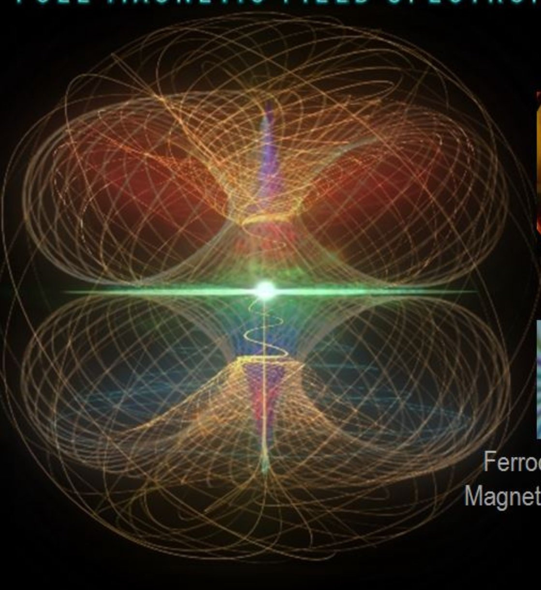

三个夸克各转各的
先把答案按自由度的层级摆出来，再一层一层验算。下面每一个数字都是本机复算的，公式都写出来了，可以自己代。
一、等 |ω| ⇒ 必然共面（这条是硬的）
把三个夸克写成相位形式。A 绕 x 轴在 yz 平面转，B 绕 y 轴在 zx 平面转，C 绕 z 轴在 xy 平面转，半径都是 r：
若三个角速度相等（符号可以任意不同），每个坐标都只是 cos ωt、sin ωt 的线性组合，于是
这就是 K10b 那条「±120° 恒模 ⇒ 正圆」的机制在更大范围的成立方式：正圆只是这个椭圆族的特例。而椭圆没有自交点，所以「中间收腰、两个叶」的结构在等速时不可能出现，不是参数没调对。
数值验证（对点云协方差做特征分解，看最小奇异值与最大之比）：
| ω = (ω₁, ω₂, ω₃) | σ₃ / σ₁ | 判定 |
|---|---|---|
| (1, 1, 1) | 0.000e+00 | 精确共面 |
| (1, −1, 1) | 0.000e+00 | 精确共面（反向也一样） |
| (−1, 1, 1) | 3.1e−08 | 精确共面 |
| (2, 2, −2) | 9.9e−09 | 精确共面 |
| (1, 1, 2) | 0.1699 | 真三维 |
| (2, −1, 1) | 0.4142 | 真三维 |
| (1, 2, 3) | 1.0000 | 各向同性填满 |
| (1, 3, 5) | 1.0000 | 各向同性填满 |
| (1, 2, 4) | 1.0000 | 各向同性填满 |
| (1, 2, 5) | 1.0000 | 各向同性填满 |
(1, 3, 5) 试过了，而且它牵出一条定理。它落在「各向同性」那一档，σ₃/σ₁ = 1.000000，跟 φ 取多少完全无关。但原因不是「等差」——我原先以为等差就该如此，对照一算就破了：(1, 2, 4)、(1, 2, 5) 既不等差也不等比，照样是 1.000000。真正成立的是下面这条：
证明只有两行。展开交叉项，例如
这四项在 0–2π 上积分，只在「两个频率相等或互为相反数」时才不为零；频率两两互异 ⇒ 四项全为 0。对角项则各是 sin² + cos² 之和，恒为 2π。
抽了 60 组随机整数三元组（正负号随机）× 6 个相位 = 360 例，偏离 1 的有 0 例；而只要出现重复或相反，立刻塌下来：(1,1,2) / (3,1,1) / (1,3,3) 都是 0.3139，(2,−1,1) 是 0.5000，(1,1,1) 是 0。
(1, 3, 5) 恰恰是「最互异」的那一类：三个频率彼此不相等、不相反、不成简单比。所以它画出来不是双叶，是一团均匀铺开的毛球。
这和 K10b 那条「对称 ⇒ 退化 ⇒ 圆」是同一枚硬币的两面：对称太强 → 塌成平面；对称太弱 → 散成球；只有中间那一小撮才有结构。
顺带一个自检：等速 φ=120° 那条「正圆」的有向面积数值算得 1.26268，而 πr² = π(0.63403)² = 1.26278，差 0.008%（采样误差），法向落在 −(1,1,1)/√3 上。面积公式是对的，后面的面积量都基于它。
二、拆开以后：从「椭圆」变成「结」
立体性立刻有了（上表 0.17–1.0）。但「腰」——也就是轨迹穿过原点——是另一件事，而且苛刻得多。令 S = 0，得到三个方程：
三个方程、三个未知相位，解是孤立的有限点集（例如 (α, β, γ) ≡ (π/4, −3π/4, −π/4)，代进去三项都精确为 0）。而我们的三个相位是 t 的线性函数，所以「轨迹扫过这些点」是一个丢番图条件：频率比与相位差必须刚好对上某个有理关系。
实测：对 27 组整数三元组 × 720 个相位（0°–360°，步长 0.5°）全扫，只有下面这些组合能精确穿过原点：
| ω = (ω₁, ω₂, ω₃) | 所需 φ | min|S| | σ₃/σ₁ | 形状与判定 |
|---|---|---|---|---|
| (1, 2, 1) | 135° | 0.000000 | 8.6e−09 | 领结，但塌成平面 |
| (1, 3, 3) | 90° | 0.000000 | 8.6e−09 | 细长交叉叶，塌成平面 |
| (3, 2, 3) | 135° | 0.000000 | 8.6e−09 | 双叶带外圈，塌成平面 |
| (1, 2, 3) | 45° | 0.000000 | 1.0000 | 大环套小 8，各向同性填满 |
| (3, 2, 1) | 45° | 0.000000 | 1.0000 | 偏心双叶，各向同性填满 |
| (3, 1, 1) | 180° | 0.000000 | 0.4142 | 左右对称双叶，唯一真正三维 + 收腰 |
| (1, 3, 5) | 0° / 90° | 0.000000 | 1.0000 | 过原点的球状填充，有腰、没叶 |
补一行 (1, 3, 5)：它在 φ = 0° 与 90° 时精确穿过原点（实测 min|S| = 1.9×10⁻¹⁶，位置 t = π/4，该处速度 |v| = 4.69 ≠ 0，是穿过不是擦到）。原因是 t = π/4 时三个相位恰好落在 π/4、3π/4、5π/4，而这三点的 (sin, cos) 组合逐项相消。但它同时是各向同性的——所以它有腰，却看不出叶：线在球面上铺匀了，腰只是其中一条穿过原点的细线。这一类（连同 (1,2,3)/45°）是「命中但没用」。
这一列 σ₃/σ₁ 是这次扫描里最意外的发现。它量的是点云在「最扁的那个方向」上的厚度与最长方向之比：0 = 精确共面，1 = 各向同性（填满一个球），中间值才是「有厚度、有结构」的立体形状。
于是 6 个命中分成三类：
- 3 个在命中的瞬间退化回平面（σ₃/σ₁ ≈ 8.6×10⁻⁹）。注意它跟 K10b 那种椭圆不是一类：椭圆关于自己的中心对称，绕一圈不落地；这里轨迹是非中心对称的闭合结，能穿过自己的重心（实测重心确在原点，|c| < 1e−6）。但厚度归零，等于又变成一张纸上的曲线。
- 2 个在命中的瞬间变成各向同性（σ₃/σ₁ = 1.0000）。厚度有了，但连结构也没了——点云在各方向一样厚，等于把球填满，看上去是团雾，不是双叶。
- 只有 1 个两者兼得：ω = (3, 1, 1)、φ = 180°，σ₃/σ₁ = 0.4142。而这个数正好是 √2 − 1，不是我凑的，是 `1.5, 0.5, 0.043…` 那类特征值算出来的。图 1 的默认参数就设在这一组。
换句话说：「三个匀速公转的圆」要同时给出「立体」和「腰落在原点」，在扫过的 19440 个组合里只找到一个。这不是「调参麻烦」，是「解集稀疏」。
注意「形状」那列：里面已经有了双叶、腰、中心小 8。所以形状不是障碍——障碍是「形状 + 立体 + 腰」三件事同时成立。下面是可拖的三维证据：把滑块拖到 (3,1,1)/180°，紫线会收成一个左右对称的双叶；拖到 (1,2,1)/135°，它也会收成一个腰——但你会看到它变成一张纸片。
二·补、那三个夸克自己会不会撞在一起
先把几何说清。这个模型里三个夸克不是「沿着 x、y、z 三根轴来回振荡」，而是各在一个坐标面上绕圈，谁的相位就归谁：
所以第一个结论很硬：三个夸克始终待在同一个单位球面上，离原点的距离恒等于 1。它们谁也走不到中心去，那个「把所有线吸到一起的尖端」是轨迹的和 S 经过原点，不是某个夸克跑到原点。
第二个结论更有意思：「有腰」（min|S| = 0）恰恰不是碰撞，而是三者摊得最开的时刻。因为 |A| = |B| = |C| = 1，要让 A + B + C = 0 只能靠三个向量两两成 120°——那是一个正三角形。我把每个「命中」预设在 min|S| 那一刻的三条夹角都量了，全是 120.00° / 120.00° / 120.00°，误差在 1e−12 量级。这也是文件名里那个 120° 的来历。
那什么时候真会撞？三个圆两两相交，交点的位置是确定的：yz 面与 zx 面只共用 z 轴，单位球上就是 (0,0,±1)；yz 面与 xy 面共用 y 轴 → (0,±1,0)；zx 面与 xy 面共用 x 轴 → (±1,0,0)。只有这 6 个点能撞，撞的时候第三个夸克离它们恰好 √2 = 1.4142r（两两成 90°），所以也不会三个挤在一起。实测（2π 一个周期）：
| 预设 | 最近两夸克间距 / r | 2π 内会重合 | 重合位置 · 次数 |
|---|---|---|---|
| (3, 1, 1) / 180° | 0.4897 | 不撞 | — 最安全 |
| (1, 2, 1) / 135° | 0.3483 | 不撞 | — |
| (1, 3, 5) / 0° | 0.2679 | 不撞 | — |
| (3, 2, 3) / 135° | 0.2170 | 不撞 | — 贴得最近但仍不接触 |
| 等速 (1, 1, 1) / 120° | 1.3660 | 不撞 | — 间距恒定，永远正三角形 |
| (1, 3, 3) / 90° | 0.0000 | 撞 2 次 | A、B 在 (0,0,±1) |
| (1, 3, 5) / 90° | 0.0000 | 撞 2 次 | A、B 在 (0,0,±1) |
| (1, 2, 3) / 45° | 0.0000 | 撞 3 次 | A、C 在 (0,±1,0) |
| (3, 2, 1) / 45° | 0.0000 | 撞 3 次 | A、C 在 (0,±1,0) |
title 和下方灰字都标了实测间距，滑到哪一组读数卡「最近夸克间距」会实时给数。
二·补二、把角速度改成负数（反向公转）会怎样
上面那张表全是正号。把 ω 允许取负——也就是让某个夸克反向绕圈——我刚把 |ω| ≤ 5 的全部有符号三元组（去重后 220 个）× φ 每 2° 扫了一遍，能精确命中原点的有 50 组。结论分三层：
| ω = (ω₁, ω₂, ω₃) | φ | min\|S\| | σ₃/σ₁ | 最近间距 / r | 结论 |
|---|---|---|---|---|---|
| (1, 2, 1) | 135° | 0 | 0 | 0.3483 | 正号原版：领结，塌成平面 |
| (1, −2, 1) | 135° | 0 | 0 | 0.3483 | 与上一行完全同形（\|S\| 分布差 3.6e−15） |
| (3, 1, 1) | 180° | 0 | 0.4142 | 0.4897 | 正号原版：唯一真三维 + 收腰 |
| (3, 1, −1) | 0° | 0 | 0.4142 | 0.4897 | 同形：负号只是把 φ 挪了 180° |
| (−3, 1, 1) | 165° | 0.173 | 0.3649 | 0.0008 | 腰没了，而且两个夸克几乎撞上 |
| (−1, 2, 1) | 93° | 0.331 | 0.3979 | 0.0702 | 腰没了，间距只剩 0.07r |
| (−3, 1, 3) | 0° | 0 | 0.4142 | 0.4897 | 有腰、不撞，却和 (3,1,1) 不同形（\|S\| 分布差 0.577） |
| (−1, 3, 5) | 154° | 0.364 | 1.0000 | — | 连 (1,3,5) 的腰都拆了（|ω|=5 超出滑块，只记录） |
第一层：σ 的三分类没有变。50 个「过原点」的组合扫下来，σ₃/σ₁ 仍然只落在 0 / 0.4142 / 1.0000 三个值上，一个不多。所以负号不会给你「第四类形状」，前面「塌平面 / 各向同性 / 唯一真三维」的结论是稳的。
第二层：负号也不全是换说法，它会真的拆掉腰。关键在于这个模型把三个相位锁成了等差 (0, φ, 2φ)。把某个 ω 取负，等于让那个夸克倒着跑；能不能等价于「把 φ 换个值」，要看能不能整体做一次时间反演再补齐相位。实测两种命运都有：(3,1,−1)/0° 与 (3,1,1)/180° 完全同形、(1,−2,1)/135° 与 (1,2,1)/135° 完全同形——这是「免费」的一类；但 (−3,1,1) 和 (−1,2,1) 就不行：min\|S\| 从 0 抬到 0.173 / 0.331，σ 也从 0.4142 掉到 0.3649 / 0.3979。原因还是那句：|A|=|B|=|C|=1，要让 S=0 只能两两成 120°，改符号后三者的相位凑不出那个正三角形了。
第三层：确实多出新的曲线，只是不在新的 σ 上。(−3,1,3)/0° 和 (3,1,1)/180° 同 σ（0.4142）、同 max\|S\|（√6 = 2.4495）、同样过原点、同样最近间距 0.4897，但两条曲线的 \|S\| 分布整整差 0.577——它们不是同一条线换视角，是真的两条。所以「同一个 σ 类里形状唯一」这个印象要改：σ 只是二阶统计量，认不出形状。
二·补三、把 ±1…±5 全排一遍：460 组其实只有 7 族
「可选项太少」这句是对的。上面两张表都是挑着列的，真要问「一共能画出多少种紫线」，得把 ω₁、ω₂、ω₃ 各取 ±1…±5 的全部整数组合排干净：共 1000 个三元组，去掉公因子（(2,4,2) 就是 (1,2,1)）和整体取反（(−1,−2,−1) 与 (1,2,1) 同一条），剩 460 组；每组再自动搜出让轨迹最靠近原点的那支相位差 φ。然后按紫线自己的形状分族——先看它住在几维空间，再看腰有没有落在原点：
| 族 | 判据（只看轨迹） | 组数 | 占 460 | 轨迹长什么样 | 代表 |
|---|---|---|---|---|---|
| ① 线段 | 协方差秩 = 1 | 2 | 0.4% | 三个圆塌到同一条直径上来回跑，连纸片都不是 | (1,1,1) @90° |
| ② 平面 · 腰在原点 | 秩 2，min\|S\|=0 | 21 | 4.6% | 蝴蝶结 / 花瓣：有尖端，但薄成一张纸 | (1,2,1) @135° |
| ③ 平面 · 不过原点 | 秩 2，min\|S\|>0 | 2 | 0.4% | 偏在一侧的环，没有尖端 | (1,−1,−1) @122° |
| ④ 立体 · 腰在原点 ★ | 0<σ<0.95，min\|S\|=0 | 27 | 5.9% | 有厚度又收腰——K10c 要找的那一类 | (3,1,1) @180° |
| ⑤ 立体 · 不过原点 | 0<σ<0.95，min\|S\|>0 | 168 | 36.5% | 拧过的螺旋、袋状、乱麻 | (2,−2,−1) @11° |
| ⑥ 各向同性 · 腰在原点 | σ=1，min\|S\|=0 | 45 | 9.8% | 三向一样开，缠成一团结，没有瓣 | (1,3,5) @0° |
| ⑦ 各向同性 · 不过原点 | σ=1，min\|S\|>0 | 195 | 42.4% | 同样一团结，且绕开原点 | (1,2,−3) @254° |
这张表里最值得看的不是「有 7 族」，而是三条几乎不像巧合的数：
- 「腰」是稀缺品：460 组里只有 95 组（20.7%）能让 S 精确穿过原点，剩下 365 组无论怎么调 φ 都画不出那个穿过零点的 8。而这 95 组里，能同时做到「立体」的只有 27 组——正是 ⑤ 反过来看的那 5.9%。
- 只要腰落在原点，σ 就被锁死在三个值上。95 个「有腰」的组，σ₃/σ₁ 只取 0.0000（23 组）、0.4142（27 组）、1.0000（45 组），一个不多；而 365 个「不过原点」的组，σ 铺开成 82 个不同取值，从 0.000 到 1.000 连续不断。换句话说：√2−1 不是巧合，它是「三向量两两 120° + 立体」这条约束的解；不要求过原点时，σ 想取什么就取什么。
- 同一个 σ = 0.4142 底下不止一种形状。把那 27 组命中按 |S| 分布逐点比对（阈值从 0.005 一直放到 0.05，结果都一样），它们其实是 10 种互不相同的曲线，叶数从 2 片排到 10 片。所以前面那句「只找到一个」得改口径：「左右对称、且三个夸克不打架的双叶」确实只有 (3,1,1)/180° 一个（间距 0.49r 是 2 叶里最宽的），但「立体的、有腰的曲线」有 10 条，(5,−3,3)/180° 就是它歪一点的表亲——同样 2 片叶、同样过原点，间距只有 0.27r。
三、但「一条轨迹」本来就画不出那张图
参考图里是一束线，不是一根线。这不是渲染风格问题，是对象类型问题：磁力线是场的积分曲线，是一个族；一条轨迹再长也只是一条。
那模型能不能给出一族？能——把相位差 φ 连续微调，得到的曲线都从原点附近穿过，尺寸层层嵌套。这就是「束」。图 1 里勾上「轨迹族」就能看到：单条是领结，21 条叠在一起是一束嵌套的腰结。
四、那张图到底是什么：偶极子磁力线的子午截面
点偶极子的磁力线在球坐标里是 r = a·sin²θ。把它放到子午面（xz 平面）看：
一条线从轴上出发，向右展开，到赤道面达到最远，再收回轴上——两片叶子、一个腰，腰就在原点上。叶子的有向面积我算了：
| 量 | 数值 | 说明 |
|---|---|---|
| 单叶有向面积 / a² | −0.294524 | 上叶、下叶完全相同，与 a 无关 |
| 整条 ∞ 的面积 / a² | −0.589048 | = 2 × 上面那行 |
| a = 0.5 / 1.0 / 2.0 / 1.25 | −0.294524（四者一致） | 相似律：面积 ∝ a² |
| |z| 最大处 | θ = 125.26°，点 (0.5443, −0.3849)a | cos θ = −1/√3 处取到，不在 θ=90° |
先把形状说准，这里我上一版写错了。单条偶极线在子午面里不是「∞」，而是一个泪滴：尖端恒在原点上（那就是磁极所在），最鼓的地方在赤道面。r = a·sin²θ 在 θ=90° 取到最大值 a——也就是说赤道面恰恰是最宽处，不是最细处。上一版我跟着照片的观感写成「上下鼓、中间掐」，那是把照片里铁磁流体的分布错当成了磁力线的几何。两件事必须分开。
照片 vs 方程：看起来像，但不是一回事

2. 那道绿线不是磁力线，是激光片光切出的赤道平面（片光照明），用来把三维结构切出一刀给你看。
3. 中心那个亮核就是磁铁本体露出来的顶，也是所有磁力线共同的源点——这一点和方程完全一致：r = a·sin²θ 的所有 a 都在原点交汇。
结论：拓扑骨架相同（所有结构从同一点发散、上下镜像），但粗细的走向相反——磁力线在赤道最宽，流体的尖刺在两极最厚。形似 ≠ 同源，这条差别正是本页要守住的。
五、让每个相位各有方程：反解能到多准
你说「允许每一个夸克空间相位有独特的变化方程」。这一放开，问题就从「找参数」变成「解方程」：给定想要的曲线 S(t)，能不能反解出三条相位曲线 α(t)、β(t)、γ(t)？
三式三未知，能。以偶极线为目标，取 A = a·sin³θ、B = a·sin²θ·cosθ，由 cos α = −sin γ 取 α = γ + π/2，剩下两式化成一个关于 u = cos γ 的二次式：
代回原式误差 4.3×10⁻¹⁶——这是机器精度，不是拟合。也就是说：形状上能精确复刻，一个像素都不差。
但代价立刻显形。三条相位曲线是这样走的（a = 1.25，横轴 θ）：
结论很硬：想复刻那张图，三个夸克不能「老老实实朝一个方向匀速公转」。要么允许它们变速，要么允许它们倒转，要么接受在折点处换分支（相当于突然跳相位）。三样都跟「三个夸克绕轴公转」这个直觉不符。
六、所以到底能不能
| 问法 | 答案 | 依据 |
|---|---|---|
| 只调一个 ω（K10b 现状） | 不能 | 共面定理：轨迹恒为过原点椭圆，永不自交 |
| 三个 ω 独立、匀速 | 能，但要碰 | 过原点是孤立解 ⇒ 丢番图条件；27×720 全扫只命中 6 组 |
| 三个 ω 独立 + 一族 φ | 能，而且这才像 | 一族嵌套的腰结 = 磁力线束；单条只是其中一根 |
| 每相各自任意方程 | 能精确复刻 | 逐点 6–8 解，误差 4×10⁻¹⁶；但非匀速、会分叉 |
| 「因为夸克这么转，所以有磁力线」 | 不成立 | 见下 |
最后一行要单独说清楚，因为它是这一整轮里最容易滑过去的地方。
形似不等于机制。三圆模型能拟合偶极磁力线的形状，是因为反解方程给足了自由度（三个相位函数 = 三个自由函数），几乎任何曲线都能被「解释」成某个三夸克的合成轨迹。这是插值，不是生成。真正的磁力线是向量场的积分曲线，它满足 ∇·B = 0、∇×B = μ₀J，曲线族之所以长成那样，是被场方程锁住的，不是被某个粒子的运动轨迹决定的。
如果只记住一句话：要得到那张图，该换的是「对象类型」（从轨迹换成场线），不是「参数」。三个圆周运动相加得到的永远是「一个点绕着原点跑出来的线」；而场线是「空间每一点都有一条线穿过」。前者天生是一条，后者天生是一束。
复算脚本：本页所有数字由纯 Python 计算（无 numpy 依赖），公式已逐条列在正文里。
K10b 里的「±120° 恒模 ⇒ 正圆」是本页 Level 0 的特例。
K10b三夸克三轴振动 · 120° 为何给出正圆
K10八度与 12 进制 · 模 9 倍频环